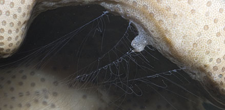
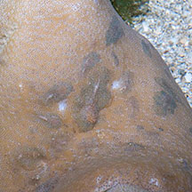
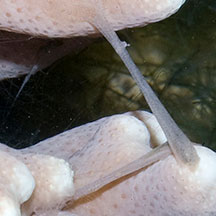
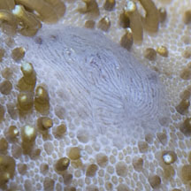

|
|
| Leathery
soft coral ctenophores Coeloplana sp. Phylum Ctenophora updated Mar 2020 Where seen? These tiny creatures are well camouflaged and often only spotted by the fine tentacles that they produce. Often overlooked, they are probably common on leathery soft corals on our shores. Their name is pronounced 'ten-nah-fours'. |
 Sentosa, Nov 11 |
 Cyrene Reef, Aug 12 |
|
| Features: 1cm or smaller, body very flat with colour and patterns to match their
host. Those seen so far were on large Leathery soft corals, often with many
individuals on one soft coral. The tiny animal produces two fringe tentacles than can be many times longer than the animal. It is used to gather food. The tentacles are stored in two large swellings on the animal. |
 Pulau Tekukor, May 10 |
 Cyrene Reef, Jul 12 |
 Cyrene Reef, Aug 12 |
| Leathery soft coral ctenophores on Singapore shores |
On wildsingapore
flickr
|
| Acknowledgement Grateful thanks to Nicholas Yap for finding out and sharing more about these critters. Links
References
|